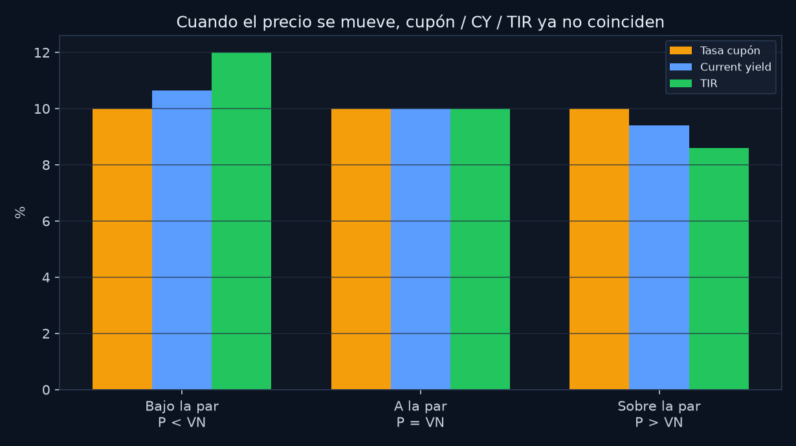
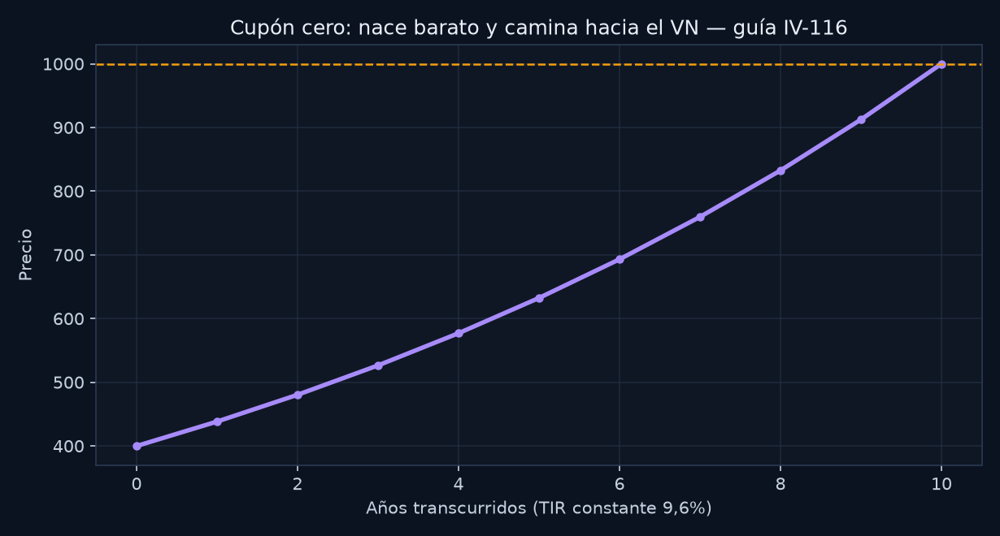

PrepIdóneo · Idóneo CNV
VAN, TIR y Renta Fija
De cero a experto. Todo lo que entra: clase de Renta Fija del curso BCR (Collatti) + Módulo IV de la guía CNV (jun 2026).
Fuentes (nada inventado)
Clase Collatti indicadores, TIR, duration, CER, dólar linked, riesgos.
Guía CNV · oficial VAN, TIR y todos los ejercicios con número.
Cómo usarla
Flechas o botones. Calculadora al lado. Un concepto por pantalla. Al final, 4 cuentas para hacer vos en 60 min.
El PDF del curso rotulado “11 a 14” es Futuros y Opciones (otro deck). Esto es la clase de RF + el módulo de valuación de la guía.
Mapa
Seis bloques, un solo hilo
1. VAN
¿Me sobra plata, en pesos de hoy, después de exigirle mi tasa?
2. TIR
¿Qué tasa está implícita en este precio? VAN = 0.
3. Indicadores
SIB, VR, clean, corridos, valor técnico, paridad.
4. Precio del bono
Flujos descontados. AL30 de la clase. Cero y CY de la guía.
5. Duration / convex
Cuánto duele +1% de tasa. Números IV-120 y IV-125.
6. Argentina + riesgos
CER, dólar linked, crédito, precio, reinversión.
VAN · nivel 0
La idea en criollo
El Valor Actual Neto responde: si meto esta plata hoy, ¿me queda algo después de exigirle a la inversión la tasa que yo quiero?
VAN > 0
Paga más que tu tasa exigida. Conviene a esa tasa.
VAN < 0
No llega. Caro. No conviene a esa tasa.
Un peso en 4 años no es un peso hoy. El VAN trae todos los pesos futuros a hoy y les resta lo que invertiste.
Guía CNV · oficial IV-1: el VAN es la diferencia entre el valor presente de los flujos y la inversión inicial.
VAN · nivel 1
La fórmula
- \(I_0\) — lo que pagás hoy (precio del bono / desembolso del proyecto)
- \(CF_t\) — cada flujo futuro (cupón, amortización, VN al final)
- \(r\) — tasa de descuento (la que exigís, o la TIR del mercado)
Atajo para un bono
El precio justo es el VAN de los flujos sin restar \(I_0\). Si pagás exactamente ese precio, VAN = 0.
VAN · nivel 1
Qué mueve el número
Guía CNV · oficial IV-6: el factor que afecta directamente el VAN es la tasa de descuento aplicada a los flujos futuros.
- Sube \(r\) → cada flujo vale menos hoy → VAN baja (y el precio del bono también).
- Flujos más cercanos valen más (por eso un amortizable vale más que un bullet, misma tasa).
- VAN positivo no es “ganancia segura”: es “gana más que \(r\)”.
- Dos proyectos de distinto tamaño: se elige el de mayor VAN, no la TIR más alta.
VAN · gráfico
La curva: más tasa, menos VAN

Ejemplo didáctico con los flujos de IV-118 (no es un gráfico de la guía). Donde cruza cero, esa tasa es la TIR.
TIR · nivel 0
La idea en criollo
La Tasa Interna de Retorno es la rentabilidad que trae metida el negocio si pagás este precio y cobrás todos los flujos.
Pregunta: ¿a qué tasa el VAN da justo cero?
Guía CNV · oficial IV-2: la TIR es la tasa que iguala el VAN a cero.
TIR · nivel 1 · clase
Tres supuestos (entran tal cual)
Clase Collatti La TIR del bono iguala el valor presente de todos los flujos (capital + intereses) con su precio. Asume:
1. Reinversión
Los cupones se reinvierten a la misma TIR.
2. Cobro efectivo
Los flujos futuros se cobran (no hay default).
3. Hold to maturity
Te quedás hasta el vencimiento. Es un yield to maturity.
Si alguno falla, la rentabilidad realizada no es la TIR. Por eso el riesgo de reinversión es el clásico de la guía (IV-4).
TIR · nivel experto
Trampas de idóneo
- TIR ≠ cupón. El cupón está fijo en el contrato. La TIR cambia con el precio.
- Sube el precio → baja la TIR. Es la misma curva de siempre.
- Varias TIR si hay flujos negativos en el medio (raro en un bono bullet).
- No compares TIR de dos proyectos de distinto tamaño o plazo a ciegas: usá VAN.
- Bono a la par: TIR = cupón = current yield.
Decisión simple
TIR > tasa exigida → VAN > 0 → sí. TIR < exigida → VAN < 0 → no. Si los tamaños difieren, gana el VAN.
Clase Collatti
Qué es un título de renta fija
Instrumento de deuda: el emisor se compromete a devolver capital (+ intereses según condiciones de emisión). El flujo está definido de antemano (salvo default o ajustes).
Privados
- Obligaciones negociables (ON) — Ley 23.576
- Valores de deuda fiduciaria (VDF de FF)
- Valores de corto plazo
Públicos
- Bonos nacionales / provinciales
- Letras (Lebacs / Letes)
- Notas
Guía CNV · oficial IV-3: característica principal de RF = pago de intereses preestablecidos y vencimiento definido. IV-5: ON → Ley 23.576.
Clase Collatti · indicadores 1
Identidad, plazo y capital
- Código SIB — alfanumérico del Sistema de Información Bursátil. Identifica la especie.
- Vencimiento — fecha del último pago de capital y/o interés, según condiciones de emisión.
- Amortización — cómo se devuelve el capital.
Bullet
Todo el capital al vencimiento. Ej. clase: AA19, AA21, AA26, AA46, AO20; en $ AO17, AMX8, AMX9, AM20, TM18, TS18.
Amortizable
Cuotas periódicas: mensual, trimestral, semestral o anual. El valor residual baja en cada cuota.
Guía CNV · IV-104
Amortizable vale más que bullet
Bono A: amortiza + interés semestral. Bono B: interés semestral, bullet. Mismo cupón, mismo calendario, vencen en 1 año. Misma tasa de descuento.
Oficial El valor actual de los flujos de A es mayor al de B.
Por qué: A te devuelve capital antes. Un peso más cerca vale más. No es “más cupón”: es timing del principal.
Clase Collatti · indicadores 2
Cómo paga el interés
Cupón cero
No paga interés periódico. Se compra con descuento; al vto cobrás el VN. En Argentina: Letras / LEBACS.
Cupón periódico
Mensual, trimestral o semestral. Fijo o variable (Libor, Badlar, caja de ahorro, encuesta plazo fijo). A veces capitalizan el interés hasta cierta fecha.
Renta anual % — tasa/cupón según condiciones de emisión. Es el contrato, no el rendimiento de mercado.
Clase Collatti · indicadores 3
Valor residual e intereses corridos
Valor residual (VR %)
Porción del título que aún no se amortizó. Baja en cada cuota, en la proporción de las condiciones de emisión.
Intereses corridos
Interés devengado desde el último cupón hasta hoy (cada 100 VN). Convenciones: 30/360, actual/360, actual/365.
Fórmula didáctica. En el examen importa el concepto y las tres bases, no un número inventado.
Clase Collatti · indicadores 4
Clean, yield, valor técnico, paridad
Precio clean
Precio de mercado sin intereses corridos. Dirty ≈ clean + corridos.
Yield anual
Relaciona la renta anual con el precio clean. Es el current yield de la clase.
Valor técnico (cada 100 VN)
\(VT = VR + \text{intereses corridos}\). Equivale al precio teórico de rescate anticipado.
Paridad %
\(\text{Paridad}=\text{Cotización}/VT\times 100\). =100 a la par; <100 bajo; >100 sobre.
Par, premio, descuento
Tres posiciones, una sola regla
Bajo la par
P < VN (o paridad < 100). El mercado exige más que el cupón. TIR > cupón.
A la par
P = VN. TIR = cupón = CY.
Sobre la par
P > VN. Cupón rico para las tasas de hoy. TIR < cupón.
Guía CNV · oficial IV-119: un bono cotiza sobre la par cuando el precio es mayor que su valor nominal.
Cuidado: la paridad de Collatti es contra el valor técnico, no contra el VN. En la guía, “sobre la par” lo anclan al VN. Son primos, no gemelos.
Tres tasas, no las mezcles
Cupón · Current yield · TIR

Bajo la par el orden es TIR > CY > cupón. A la par las tres coinciden. Sobre la par se invierte.
Nivel 2 · guía
IV-118: precio y current yield
VN $1.000 · cupón $100 anual · 4 años · TIR 12%.
Oficial Current yield = 10,65%. Cupón 10%, TIR 12%. Bajo la par, como tiene que ser.
La guía no pide el 939: pide el CY. Sin el precio no hay CY. En la HP: NPV o descuento flujo por flujo.
Precio y TIR
Se miran de frente

Más TIR, menos precio. Cruza $1.000 cuando TIR = cupón. El puntito de la guía es IV-118 (P ≈ 939, TIR 12%).
Cupón cero
Un solo flujo: la TIR sí se despeja
Guía CNV · oficial IV-116: VN 1.000, 10 años, r = 9,6%.

Trampa IV-103
Qué NO es propia de un cupón cero
Oficial La guía marca como respuesta: “Un bono cupón cero puede negociarse sobre la par cuando bajan las tasas de interés.”
Con tasas positivas un cero se compra con descuento: P < VN. Si las tasas bajan, el precio sube y se acerca a 1000, pero no pasa la par salvo tasa negativa. Esa frase es la que la guía considera que no es característica propia.
Clase Collatti · AL30
Un bono argentino de verdad
Amortización: 13 cuotas semestrales. Primera 4% del capital, las otras 12 de 8%. Pagos 09/01 y 09/07. Vto 09/07/2030.
Cupón escalonado: 0,125% → 0,50% → 0,75% → 1,75% hasta el vto. Empieza 09/07/2021.

Clase Collatti · AL30
La tabla de flujos (tal cual la clase)
| Fecha | VR | Renta | Amort | FF |
|---|---|---|---|---|
| 2026-07-09 | 72 | 0,27 | 8 | 8,27 |
| 2027-01-09 | 64 | 0,24 | 8 | 8,24 |
| 2027-07-09 | 56 | 0,21 | 8 | 8,21 |
| 2028-01-09 | 48 | 0,42 | 8 | 8,42 |
| 2028-07-09 | 40 | 0,35 | 8 | 8,35 |
| 2029-01-09 | 32 | 0,28 | 8 | 8,28 |
| 2029-07-09 | 24 | 0,21 | 8 | 8,21 |
| 2030-01-09 | 16 | 0,14 | 8 | 8,14 |
| 2030-07-09 | 8 | 0,07 | 8 | 8,07 |
La TIR es la \(r\) que hace \(\sum FF_t/(1+r)^t =\) precio. Acá no hay que calcularla: hay que saber qué se mete en la máquina.
Clase Collatti
Duration: vida promedio del bono
Macaulay: plazo promedio ponderado por el valor presente de cada flujo.
Duration modificada (clase): \(DM=D/(1+i)\), con \(i\) = TIR del período.
Más plazo promedio → más DM → el precio se mueve más. Si esperás baja de tasas, querés más duration.
Guía CNV · IV-120
Duration de una cartera
No es el promedio simple. Se pondera por precio (valor de mercado).

Oficial 6,07. En la calculadora: (8400+6000+3800)/3000 = 18200/3000 = 6,066… → 6,07.
Guía CNV · IV-125
Convexidad: la curva no es una recta

DM = 5,21 · Conv = 52,1 · \(\Delta y = +1,21\% = 0,0121\).
Oficial −5,54%. Ojo los manuales CFA ponen \(\tfrac12 Conv(\Delta y)^2\) y te da −5,92%. En este examen usá la fórmula de arriba, sin el ½.
Clase Collatti · Argentina
CER
- Lo publica diario el BCRA.
- Replica la variación del IPC (INDEC).
- Rezago ≈ 45 días respecto de la inflación.
- Índice acumulativo, base 1 en el origen.
Bonos/letras CER ajustan el capital (y a veces el cupón) por este índice. El cupón “chico” es real; el nominal se come la inflación via CER.
Tip de examen
Si preguntan “qué es el CER”, la respuesta corta es: índice del BCRA que sigue al IPC, con rezago de ~45 días.
Clase Collatti · Argentina
Bonos dólar linked
- Emitidos en pesos.
- Capital e intereses se ajustan por el dólar oficial (Com. “A” 3500 / TC de referencia del Tesoro).
- Se pagan siempre en pesos.
- No se pagan en billetes, ni MEP, ni CCL.
Para qué existen
Proteger contra la devaluación del tipo de cambio oficial. Si el oficial se atrasa vs MEP, el linked no te cubre ese gap.
Clase Collatti · lista de examen
Riesgos de un bono
1. Crédito
El emisor no paga (default). Rating, covenants, subordinación.
2. Tasa de interés
De precio: sube la tasa de mercado, baja el precio.
De reinversión: la TIR asume reinvertir cupones a la misma tasa; si las tasas caen, reinvertís peor.
Guía CNV · oficial IV-4: un riesgo asociado a la renta fija es el riesgo de reinversión.
Mismo módulo · ratios que también entran
ROE y liquidez (IV-105 / IV-106)
IV-105 El ROE sube si la ganancia neta cae 5% y el valor libro promedio cae 10%: \(0,95/0,90>1\).
IV-106 AC 11.492 · PC 16.914 · PNC 3.941 · PN 17.610.
Liquidez \(=11492/16914=\mathbf{68\%}\). Endeudamiento \(=20855/17610=\mathbf{1,18}\).
Del mismo curso: PER = Precio/BPA. PER alto = el mercado espera alto crecimiento (IV-9, IV-12).
Banco oficial · para practicar
Las 8 que tenés que saber hacer
- IV-1 VAN = VP flujos − inversión inicial
- IV-2 TIR = tasa que hace VAN = 0
- IV-6 El VAN se mueve con la tasa de descuento
- IV-104 Amortizable > bullet (mismo descuento)
- IV-116 Cero: \(1000/1{,}096^{10}=\mathbf{399,85}\)
- IV-118 CY = \(100/939{,}13=\mathbf{10,65\%}\)
- IV-120 Duration cartera = 6,07
- IV-125 \(\Delta P/P=\mathbf{-5,54\%}\) (sin el ½ CFA)
Cheat sheet
En el músculo, 30 segundos
- VAN = flujos descontados − lo que pagás hoy
- TIR = tasa que hace VAN = 0 · precio ↑ entonces TIR ↓
- TIR asume: reinversión, cobro, hold to maturity
- Clean = sin corridos · VT = VR + corridos · Paridad = Cotiz / VT
- A la par: cupón = CY = TIR · Bajo la par: TIR > CY > cupón
- Cero: \(P=VN/(1+r)^n\)
- Duration cartera = promedio ponderado por precio
- ΔP/P ≈ −DM Δy + Conv (Δy)² ← números de esta guía
- CER = IPC BCRA, ~45 días · Linked = pesos + oficial, no MEP
Cierre · acción de hoy
60 minutos, calculadora, cuatro cuentas
Sin mirar las respuestas. Después contrastá con esta clase.
- IV-116: cero VN 1000, 10 años, 9,6% → precio a dos decimales.
- IV-118: cupón 100, VN 1000, 4 años, TIR 12% → current yield.
- IV-120: precios 1050 / 1000 / 950 · D 8 / 6 / 4 → duration cartera.
- IV-125: DM 5,21 · Conv 52,1 · +1,21% → variación de precio (sin ½).
PrepIdóneo · práctica no oficial · guía CNV jun 2026 + clase Collatti
← → para moverte · volver al simulacro